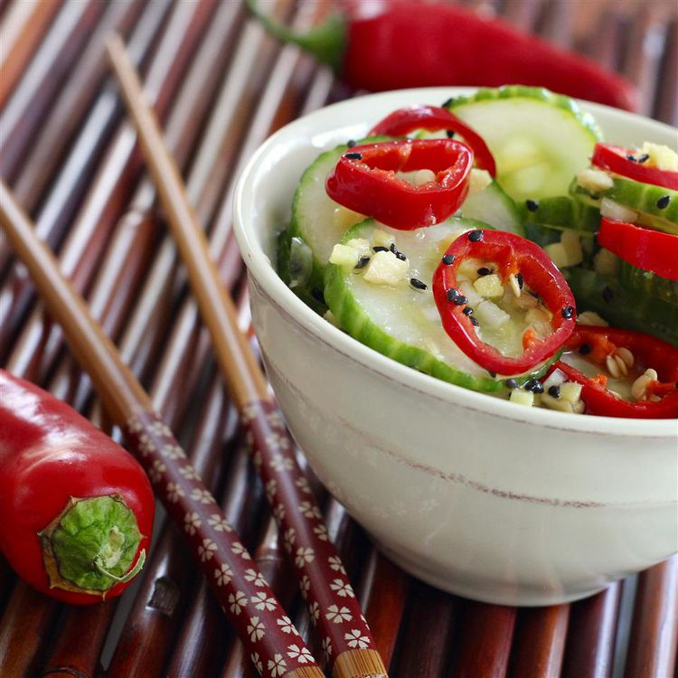

Asian Cucumber Salad

This Asian cucumber salad is a really delicious, light salad. Easy to make, hard to resist.
Ingredients
- 2 cucumbers - halved lengthwise, seeded, and sliced
- 2 teaspoons salt
- 1/2 cup rice vinegar
- 1/4 cup white sugar
- 2 tablespoons sesame oil
- 2 cloves garlic, minced
- 1 tablespoon minced garlic
- 1 tablespoon sesame seeds
- 1 tablespoon minced fresh ginger root
- 4 fresh red chile peppers, sliced
Steps
- Place cucumber slices in a colander and sprinkle with salt; set aside to drain for 1 hour.
- Whisk vinegar and sugar together until sugar is dissolved. Add sesame oil, garlic, ginger, and sesame seeds; stir.
- Rinse salt off cucumber slices by running under cold water; place in a large bowl with sliced red chile peppers. Drizzle dressing over vegetables and toss to coat. Serve immediately.